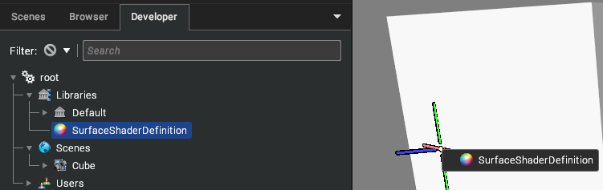
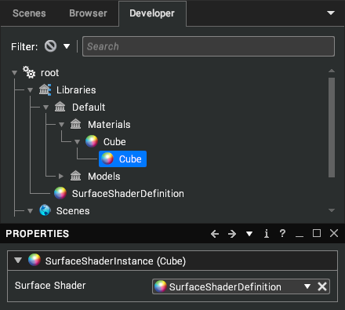
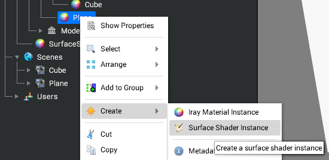
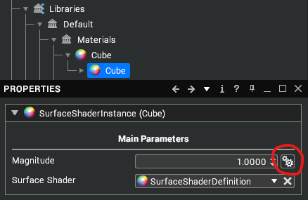
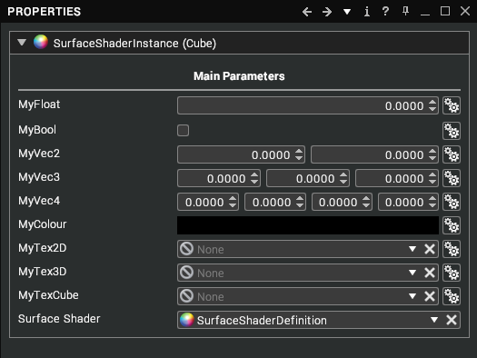

Writing Surface Shaders
A guide to writing shaders that can be applied to materials in your scene.
Surface Shaders allow custom shading to be applied to visuals within the scene.
When a surface shader is applied to a material, all visuals using that material will run the custom shader when rendering.
Creating the assemblies
There are two Surface Shader assemblies that can be created under a Library assembly in the Developer tree view:
Surface Shader Definition: This is the script's assembly which should be created first. Double-click to open in the Script Editor.
Surface Shader Instance: This assembly contains one property, which is a reference to the Surface Shader Definition of which it is an instance of. This is what gets added to a material to trigger the surface shader defined in the definition to be used in-place of the material.
A shader definition is the first thing which should be created, and provides the base object which a surface shader instance will reference. After creating a defintion, an instance can be created in a couple of ways:
1. Click and drag a surface shader definition on to an object in the scene.

This will create a surface shader instance as a child of that object's assigned material, with its Surface Shader property already referencing the definition.

2. Right-Click on a Material and select "Create -> Surface Shader Instance".

Then, ensure the "Surface Shader" property references the desired definition.
Writing the Shader
After creating and opening a surface shader definition, use the following guide to get started with creating a custom surface shader. Note: Surface Shaders are written in OpenGL Shading Language (GLSL) and so prior knowledge is desirable.
surface( )
The surface function gives the ability to modify the properties of a fragment before any lighting calculations are performed. It must take the following form:
void surface(SurfaceInput i, inout SurfaceOutput o)
{
o.albedo = vec3(1.0, 0.0, 0.0);
}
That simple function will set the albedo of the fragment to red. The SurfaceInput parameter contains data about the current fragment being processed which may be useful in creating a surface shader. The SurfaceOutput parameter is where the desired surface details should be written out to.
SurfaceInput
This structure contains data about the current fragment which may come in handy for creating a desired shader. Following is a list of all the possible members of this structure:
Name | Type | Description |
|---|
position | vec3 | The eye-space position. |
normal | vec3 | The eye-space normal. |
tangent | vec3 | The eye-space tangent. |
bitangent | vec3 | The eye-space bitangent. |
uv0 | vec2 | The UV value of TexCoord0. |
uv1 | vec2 | The UV value of TexCoord1. |
uv2 | vec2 | The UV value of TexCoord2. |
uv3 | vec2 | The UV value of TexCoord3. |
alpha | float | Alpha value, describes opacity. |
reflection | vec3 | Eye-space reflection vector for the fragment. [Available in surface() only] |
direction | vec3 | View direction for the fragment. [Available in surface() only] |
position_world | vec3 | World-Space position of the vertex. [Available in vertex() only] |
position_model | vec3 | Model-Space position of the vertex. [Available in surface() only] |
By default, nothing needs to be done to gain access to position and normal. However, to access any of the other members they must be declared within a SurfaceInput struct definition as below:
struct SurfaceInput
{
vec3 tangent;
vec2 uv0;
float alpha;
}
Putting the above in our file (before any of the data members are used) will give us access to tangent, uv0, and alpha from the SurfaceInput object passed into vertex() and/or surface(). It does not matter that position and normal are missing from this definition, these will be added behind the scenes and so will still be available in the shader.
SurfaceOutput
This structure is used as the output of the surface( ) function. Following is a list of all the data members available for writing out to.
Name | Type | Description |
|---|
position | vec3 | Eye-space position passed on to the remaining shader pipeline to undergo lighting. |
normal | vec3 | Eye-space normal passed on to the remaining shader pipeline to undergo lighting. |
albedo | vec3 | Surface albedo used for lighting calculations. |
emissive | vec3 | Emissive output from the surface. |
smoothness | float | Adjusts how smooth the material's surface appears, 0 being very rough and 1 being perfectly smooth. |
reflectivity | float | A value from 0 to 1 representing the amount of light that is reflected. |
metalness | float | A value from 0 to 1 representing how metallic the surface is. |
ambient | float | How much to scale ambient lighting for this surface. |
alpha | float | Adjusts the translucency of the surface. |
IBL | float | Set to 0.0 or 1.0 to either disable/enable Image-Based Lighting for this surface fragment. |
Unlike with SurfaceInput, we do not need to define this structure within our file; all of the data members are available for reading/writing within the surface( ) function.
litSurface()
When the aforementioned surface() function is declared, the contents of the output structure SurfaceOutput goes on to get passed through the renderers lighting path. This may not be desirable if custom lighting has already been applied (such as using evalLighting() described later), this is where litSurface() comes in. It is used in place of the surface() function and uses the new structure LitFragment for its output:
void litSurface(SurfaceInput i, inout LitFragment o)
{
o.colour = vec4(1.0, 0.0, 0.0, 1.0);
}
LitFragment
As previously mentioned this structure is used to store the output of the litSurface() function. Unlike SurfaceOutput it only has two members:
Name | Type | Description |
|---|
colour | vec4 | The final desired colour of this surface, where the alpha channel controls the translucency. |
position | vec3 | Eye-space position passed on to the remaining renderer shading pipeline. |
evalLighting()
vec4 evalLighting(in Fragment input);
This function can be called from within surface() or litSurface(). Callers pass in a filled-in Fragment structure and it returns the resulting lit colour in a vec4. Following is an example usage:
void litSurface(SurfaceInput i, inout LitFragment o)
{
Fragment frag;
frag.albedo = vec3(0.0, 1.0, 0.0);
frag.normal = i.normal;
frag.position = i.position;
// ...
vec4 lightingResult = evalLighting(frag);
o.colour = lightingResult;
}
Fragment structure
This structure is used to pass into a call to evalLighting(). All members should be assigned a value to ensure no garbage is placed in unassigned members. Following is a table of all members available:
Name | Type | Description |
|---|
position | vec3 | Eye-space position passed on to the remaining shader pipeline to undergo lighting. |
normal | vec3 | Eye-space normal passed on to the remaining shader pipeline to undergo lighting. |
albedo | vec3 | Surface albedo used for lighting calculations. |
emissive | vec3 | Emissive output from the surface. |
smoothness | float | Adjusts how smooth the material's surface appears, 0 being very rough and 1 being perfectly smooth. |
reflectivity | float | A value from 0 to 1 representing the amount of light that is reflected. |
metalness | float | A value from 0 to 1 representing how metallic the surface is. |
ambient | float | How much to scale ambient lighting for this surface. |
alpha | float | Adjusts the translucency of the surface. |
IBL | float | Set to 0.0 or 1.0 to either disable/enable Image-Based Lighting for this surface fragment. |
vertex( )
The vertex function allows the shader to manipulate vertices of models using this surface shader. It takes the following form:
void vertex(inout SurfaceInput i)
{
// ...
}
Notice that SurfaceInput is declared as "inout", so it acts as the sole input and sole output parameter for this function. Any values modified in this structure will propagate along to the surface( ) function as an input parameter.
Below is a quick example of modifying a model's vertices using this function:
void vertex(inout SurfaceInput i)
{
i.position = i.position + i.normal;
}
That function will extrude all vertices by one unit along their normals.
Uniforms
There are a number of shader uniforms accessible within the surface shaders which may prove useful.
Name | Type | Description |
|---|
uni_time | float | Indicates how much time has elapsed whilst the application has been active. Can be useful for animating surface properties. |
uni_viewport | vec4 | Contains the current viewport parameters. (origin.x, origin.y, width, height) |
uni_viewMat | mat4 | View matrix. Can be used to transform a position/direction into eye-space. |
uni_viewMatInv | mat4 | Inverse view matrix. Can be used to transform from eye-space to world-space. |
uni_proj | mat4 | Projection matrix. |
uni_projInv | mat4 | Inverse projection matrix. |
Extending the previous example to use one of these uniforms:
void vertex(inout SurfaceInput i)
{
i.position = i.position + i.normal * sin(uni_time);
}
That function will animate the deformation of the meshes vertices along the vertex normals, resulting in a model which will expand and collapse over time.
Input Parameters
It is possible to also input custom properties to the surface shaders which can be modified from the user interface. For example, in our previous displacement example we may want to modify the magnitude from the user interface, this can be done as follows:
<params>
<MyMagnitude type="float" value="1.0" caption="Magnitude" />
</params>
uniform float MyMagnitude;
void vertex(inout SurfaceInput i)
{
i.position = i.position + i.normal * sin(uni_time) * MyMagnitude;
}
That code defines a user value "MyMagnitude" of type floating-point, with a default value of 1.0 and a caption of "Magnitude" which is how it will be shown in the UI. Notice how there must also be a uniform of the same type and name defined for the shader to access the value. To modify the magnitude the user can alter the "Magnitude" property which will now be visible when selecting the Surface Shader Instance.
These custom properties can also inherit their value from any material properties where the types match. This can be done by clicking on the button to the right of the input fields.

Following is some sample code showing usage of all the types available to the user parameters, along with an example of how they appear in the UI.
<params>
<MyFloat type="float" />
<MyBool type="bool" />
<MyVec2 type="vec2" />
<MyVec3 type="vec3" />
<MyVec4 type="vec4" />
<MyColour type="colour" />
<MyTex2D type="texture2d" />
<MyTex3D type="texture3d" />
<MyTexCube type="texturecube" />
</params>
uniform float MyFloat;
uniform bool MyBool;
uniform vec2 MyVec2;
uniform vec3 MyVec3;
uniform vec4 MyVec4;
uniform vec3 MyColour;
uniform sampler2d MyTex2D;
uniform sampler3d MyTex3D;
uniform samplerCube MyTexCube;
